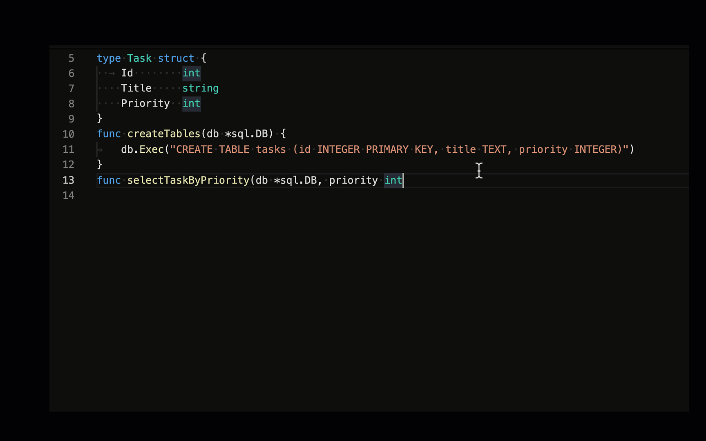
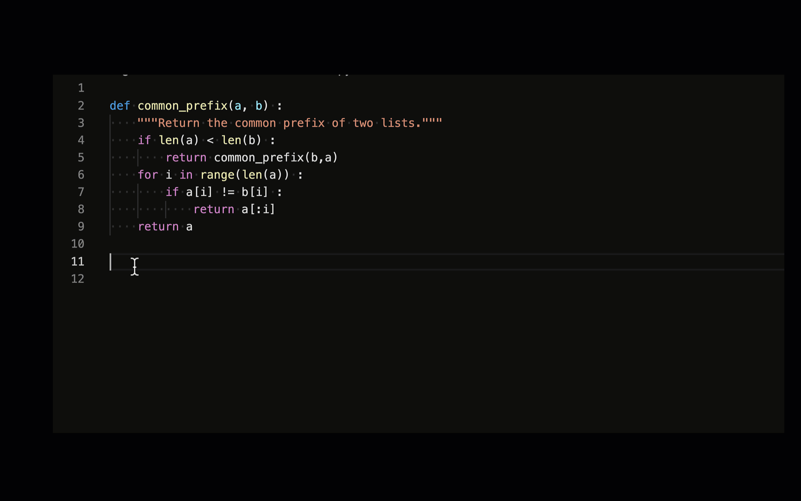
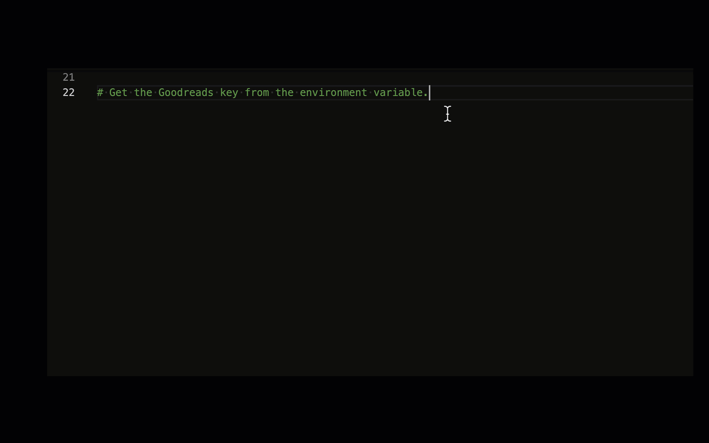
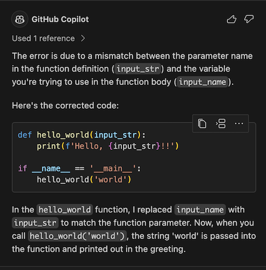

AI 编程简介
How to build an enterprise LLM application: Lessons from GitHub Copilot
使用 AI 编程，除了解决编程问题以外，更重要是形成对 AI 的正确认知。
比如，除了铺天盖地的对话式 AI 外，补全式的用户体验其实更好。
import os
from openai import OpenAI
from dotenv import load_dotenv, find_dotenv
_ = load_dotenv(find_dotenv()) # 读取本地 .env 文件，里面定义了 OPENAI_API_KEY
os.environ['OPENAI_API_KEY'] = 'sk-xxx'
os.environ['OPENAI_BASE_URL'] = 'https://api.chatanywhere.com.cn'
client = OpenAI(
api_key=os.getenv("OPENAI_API_KEY"),
base_url=os.getenv("OPENAI_BASE_URL")
)
response = client.chat.completions.create(
model = "gpt-3.5-turbo",
# model = "gpt-4",
messages = [
{"role":"user", "content":"tell me a joke"}
],
temperature = 1
)
response_message = response.choices[0].message.content
print(response_message)
Why was the math book sad?
Because it had too many problems.
response = client.chat.completions.create(
model = "gpt-4",
messages = [
{"role":"system", "content":"你是一个精通Python语言的编程专家"},
{"role":"user", "content":"Python有什么特点？"}
],
temperature = 0
)
response_message = response.choices[0].message.content
print(response_message)
补全式编程：GitHub Copilot
安装
- 首先，需要有 GitHub 账号
- 然后，到 https://github.com/settings/copilot 启用
- 最后，安装 IDE 插件，比如
- VSCode: https://marketplace.visualstudio.com/items?itemName=GitHub.copilot
- PyCharm: https://plugins.jetbrains.com/plugin/17718-github-copilot
import os
import openai
from dotenv import load_dotenv, find_dotenv
_ = load_dotenv(find_dotenv()) # 读取本地 .env 文件，里面定义了 OPENAI_API_KEY
os.environ['OPENAI_API_KEY'] = 'sk-xxx'
os.environ['OPENAI_BASE_URL'] = 'https://api.fe8.cn/v1'
client = openai(
api_key=os.getenv("OPENAI_API_KEY"),
base_url=os.getenv("OPENAI_BASE_URL")
)
# reponse = openai.Chat
使用
Copilot
它根据上下文，自动生成建议代码。如果觉得合适，按下 tab 就行了。比如：
完成整个函数

写测试用例

根据注释写代码
但这种用法不太推荐，因为注释里针对 AI 而写的 prompt，并不适合人类阅读。

一些技巧
- 代码有了，补注释。会按照文档标准写注释
- 改写当前代码，可另起一块新写，AI 补全得更准，完成后再删旧代码
Cmd/Ctrl + →只接受一个 token
Copilot 原理
- 最初是使用 OpenAI Codex 模型，它也是 GPT-3.5、GPT-4 的「一部分」。现在已经完全升级，模型细节未知。
- 应用层的技术就是 prompt engineering。Prompt 中包含：
- 光标前和光标后的代码片段
- 其它相关代码片段。当前文件和其它打开的 tab 里的代码被切成每个 60 行的片段，用 Jaccard 相似度评分，取高分的
- 被取用的代码片段的路径。用注释的方式插入，例如：
# filepath: foo/bar.py，或者// filepath: foo.bar.js - 在函数定义、类定义、if-else 等之后，会补全整段代码，其它时候只补全当前行
了解更多
- Inside GitHub: Working with the LLMs behind GitHub Copilot
- How GitHub Copilot is getting better at understanding your code
- A developer’s guide to prompt engineering and LLMs
对话式编程
形式很简单，你发指令，AI 完成任务。效果好坏，取决于模型能力，和你的 prompt。
GPT-4
- GPT-4 是目前地球上编程能力最强的大模型，没有之一
- 可以购买 ChatGPT Plus，Poe GPT-4，或者直接使用 API key
- 免费羊毛是 Bing Chat
使用技巧：
- 所有 prompt engineering 的技巧都有效，可以把代码、错误信息直接粘贴进去
- 不只写代码，任何技术相关的问题都可以问，比自己搜索效率高很多
- 其实，太多轮次对话并不会带来性能提升，可能反倒引入不相关的东西。开新轮次，最近 5 轮对话带足够的信息量，效果更好

不会写的代码问 AI：说清楚你的输入、输出、希望实现的功能，包括用什么库实现（如果知道）
python函数，判断一个字符串是否包含中文
你可以使用Python的unicodedata库来判断一个字符串是否包含中文。以下是一个简单的函数：
import unicodedata
def contains_chinese(str):
for char in str:
if unicodedata.name(char).startswith('CJK UNIFIED'):
return True
return False
# 测试函数
print(contains_chinese('Hello, 你好')) # 输出: True
print(contains_chinese('Hello, world!')) # 输出: False
这个函数通过遍历字符串中的每个字符，使用unicodedata.name(char)获取字符的Unicode名称，如果名称以"CJK UNIFIED"开始，那么这个字符就是中文字符。如果字符串中有任何一个中文字符，函数就返回True，否则返回False。
字符串是否全部由中文字符串组成
你可以使用Python的unicodedata库来判断一个字符串是否全部由中文字符组成。以下是一个简单的函数：
import unicodedata
def is_all_chinese(str):
for char in str:
if not unicodedata.name(char).startswith('CJK UNIFIED'):
return False
return True
# 测试函数
print(is_all_chinese('你好')) # 输出: True
print(is_all_chinese('Hello, 你好')) # 输出: False
这个函数通过遍历字符串中的每个字符，使用unicodedata.name(char)获取字符的Unicode名称，如果名称不是以"CJK UNIFIED"开始，那么这个字符就不是中文字符，函数就返回False。如果字符串中的所有字符都是中文字符，函数就返回True。
python函数，判断一个字符串是否包含中文
你可以使用Python的unicodedata库来判断一个字符串是否包含中文。以下是一个简单的函数：
import unicodedata
def contains_chinese(str):
for char in str:
if unicodedata.name(char).startswith('CJK UNIFIED'):
return True
return False
# 测试函数
print(contains_chinese('Hello, 你好')) # 输出: True
print(contains_chinese('Hello, world!')) # 输出: False
这个函数通过遍历字符串中的每个字符，使用unicodedata.name(char)获取字符的Unicode名称，如果名称以"CJK UNIFIED"开始，那么这个字符就是中文字符。如果字符串中有任何一个中文字符，函数就返回True，否则返回False。
让 AI 帮你 Debug：把你的代码和报错信息一起贴给 GPT-4，可以让它帮你调试/修改代码
my code
def hello_world(input_str):
print(f'Hello, {input_name}!!')
if __name__ == '__main__':
hello_world('world')
error looks like this
Traceback (most recent call last):
File "/Users/i515190/Devops_sap/Tech_Books/jxaibook/docs/chap2024_zh/test.py", line 5, in <module>
hello_world('world')
File "/Users/i515190/Devops_sap/Tech_Books/jxaibook/docs/chap2024_zh/test.py", line 2, in hello_world
print(f'Hello, {input_name}!!')
^^^^^^^^^^
NameError: name 'input_name' is not defined
Please help resolve this error
The error is due to a mismatch between the parameter name in the function definition (input_str) and the variable you're trying to use in the function body (input_name).
Here's the corrected code:
def hello_world(input_str):
print(f'Hello, {input_str}!!')
if __name__ == '__main__':
hello_world('world')
In the hello_world function, I replaced input_name with input_str to match the function parameter. Now, when you call hello_world('world'), the string 'world' is passed into the function and printed out in the greeting.
GitHub Copilot chat

经验：
- 猜测背后是 gpt-3.5-turbo，比 gpt-4 效果差很多很多
- 因为和 IDE 结合得好，所以简单任务交给它更高效
- 各种场景都有「Ask Copilot」链接，
Cmd/Ctrl + i直接呼出 - 可以解释代码、修 bug、改进代码、写测试用例等等
- 它会从 terminal 里取 context
Copilot chat 是 Copilot X 的一部分。Copilot X 是个野心勃勃的项目，要把 AI 带到所有编程场景。
Agent 们
前面的工具都是帮你编程，而 Agent 是完全代替你编程
GPT Engineer
https://github.com/AntonOsika/gpt-engineer
指定您想要它构建的内容，AI 会要求澄清，然后构建它。
核心 prompts：https://github.com/AntonOsika/gpt-engineer/tree/main/gpt_engineer/preprompts
vim prompt
gpt-engineer .
GPT Web App Generator
主页：https://magic-app-generator.wasp-lang.dev/
源代码：https://github.com/wasp-lang/wasp/tree/wasp-ai
用 Wasp, React, Node.js 和 Prisma 生成全栈 Web 应用程序。
纯在线操作，跟着提示下载到本地执行。
核心 prompts：https://github.com/wasp-lang/wasp/blob/wasp-ai/waspc/src/Wasp/AI/GenerateNewProject/Operation.hs
MetaGPT：多智能体元编程框架
https://github.com/geekan/MetaGPT
使 GPTs 组成软件公司，协作处理更复杂的任务。
官方说明：
- MetaGPT 输入一句话的老板需求，输出用户故事 / 竞品分析 / 需求 / 数据结构 / APIs / 文件等
- MetaGPT 内部包括产品经理 / 架构师 / 项目经理 / 工程师，它提供了一个软件公司的全过程与精心调配的 SOP

它不只写代码，而且写文档、画图。
prompts：https://github.com/geekan/MetaGPT/tree/main/metagpt/prompts
更多工具
- Bito - 基于 GPT-3.5 的代码补全，免费。功能更多，比如可以自建 prompt 模板。CLI 工具值得一用
- Amazon CodeWhisperer - 代码补全，免费。AWS 相关的编程能力卓越。其它凑合
- Cursor - AI first 的 IDE。被逼开源
- Tabnine - 代码补全，个人基础版免费
更多开源编程大模型
- Code Llama - Meta 出品，可能是开源中最强的
- 姜子牙 Ziya-Coding-15B-v1 - 深圳 IDEA 研究院出品
- CodeFuse-CodeLlama-34B - 阿里出品
- WizardCoder - WizardLM 出品
AI 幻觉的必然性，和 AI 能力的天花板
「...if a machine is expected to be infallible, it cannot also be intelligent.（如果一个机器绝对不会犯错，它就不可能是智能的。）」
拥有类人的智能，就一定和人类一样，说胡话、瞎话、错话，说有争议的话。
所以，AI 的幻觉不可完全消除，只能尽可能压制。
所以，使用者的判断力，决定了 AI 能发挥能力的上限。
AI 能力定律：
ext{能力落地} = \min(\text{AI 能力}, \text{使用者判断力})$
AI 提效定律：
$\text{生产效率提升幅度} = \frac{\text{使用者判断力}}{\text{使用者生产力}}$